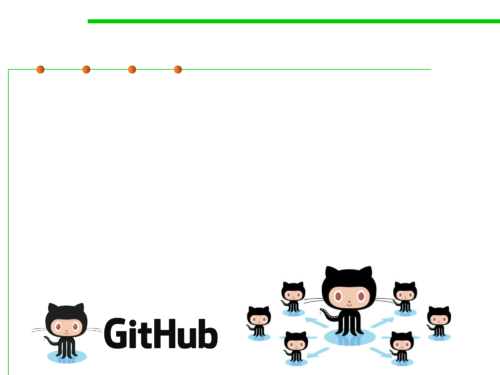

GitHub
2.1 Software Lifecycle and Configuration Management
▪ GitHub: a web-based Git server and Internet hosting service.
– It offers all of the distributed version control and SCM functionality of Git
as well as adding its own features.
– It provides access control and several collaboration features such as bug
tracking, feature requests, task management, and wikis for every project.
– Private and free repositories (for open-source projects)
▪ In 2016, it has more than 14 million users above 35 million
repositories.
▪ In 2018, it was bought by Microsoft with $7.5 billion.